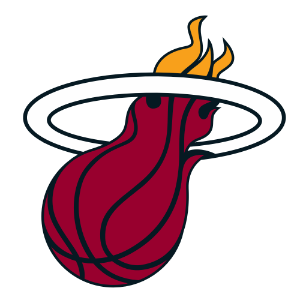

Los Miami Heat (en español, Calor de Miami) son un equipo de baloncesto de la NBA con sede en Miami, Florida. Juega sus partidos como locales en la American Airlines Arena y forma parte de la División Sureste de la Conferencia Este de la NBA. El equipo fue fundado en 1988 gracias a la expansión de la NBA en 1987. Cuenta con tres títulos de la NBA, obtenidos en la temporada 2005-06 al vencer a los Dallas Mavericks 4-2, en la 2011-12 derrotando a Oklahoma City Thunder 4-1 en la serie, además del más reciente obtenido en la 2012-13 derrotando en el máximo de 7 partidos a los San Antonio Spurs. Además de los tres anillos, el Heat ha obtenido 11 títulos de división, logrados en las tres épocas más gloriosas de la franquicia: 1997-2000, 2005-2007 y 2011-2014. En sus filas han jugado estrellas de la liga como Alonzo Mourning, Glen Rice, Tim Hardaway, Gary Payton, Shaquille O'Neal, Dwyane Wade, Chris Bosh, LeBron James y Jimmy Butler
Miami Heat entró en la Agencia Libre de la NBA en 2010 con cerca de 45 millones dólares en el espacio del tope salarial, con la posibilidad de volver a firmar al agente libre Dwyane Wade, y añadir dos de los mejores jugadores de la NBA: LeBron James y Chris Bosh, llamándolos así el monstruo de tres cabezas ya que se esperaba una gran temporada para los Heat. Los New Jersey Nets, New York Knicks, Los Ángeles Clippers, Chicago Bulls, Cleveland Cavaliers, Dallas Mavericks y los propios Heat estaban en negociaciones para firmar a LeBron James. El 7 de julio de 2010, Dwyane Wade y Chris Bosh llegaron a un acuerdo con Miami Heat. Luego, el 8 de julio de 2010, LeBron James mantuvo un especial de una hora en ESPN para anunciar su decisión de jugar con los Heat. Más tarde esa noche, los Heat anunciaron el traspaso de Michael Beasley a los Minnesota Timberwolves por un par de rondas de draft y dinero.
El 8 de julio de 2010, se hizo oficial que las superestrellas de la NBA y ganadores de la medalla de oro olímpica de Beijing LeBron James, Dwyane Wade y Chris Bosh se unirían a Miami. El Heat terminó ofertas de firma y el comercio, el envío de un total de cuatro futuras primeras rondas y dos selecciones de segunda ronda a los Cavaliers y los Raptors de Bosh y James (ambos de 6 años y la firma de los contratos de 110,1 millones dólares). Dwyane Wade volvió a firmar con los Heat de 107,59 millones dólares por seis años. Las tres estrellas tienen cláusulas de rescisión anticipada de sus contratos, lo que les permite convertirse en agentes libres de nuevo en el verano de 2014. El último año en las tres ofertas, de 2015-16, es una opción del jugador. Los tres hicieron su debut en 2010 en la fiesta de bienvenida de verano de los Heat en el American Airlines Arena el 9 de julio, donde fueron presentados como Los Tres Reyes Magos por el narrador de los Heat y el co-presentador Eric Reid.
Al reducir sus sueldos las tres superestrellas, los Miami Heat continuaban armando un equipo campeón, con la renuncia de Udonis Haslem y la firma del alero veterano y compañero de equipo de Haslem en la Universidad de Florida, Mike Miller por 5 años de contrato a razón de 45 millones. Con el fin de llenar los vacíos en la pintura, firmaron al excompañero de James en Cleveland, Zydrunas Ilgauskas por dos años por el mínimo de veterano, 2,8 millones de dólares, renunciando Joel Anthony, y la firma del ala-pívot Juwan Howard. También llegarían Eddie House y el rookie Dexter Pittman.
En la temporada 2002-03 a pesar de que Jordan nunca jugó para Miami, Pat Riley como gerente general de Miami Heat retiró el número 23 de la franquicia como un tributo a Jordan por su contribución a la liga. Se retiró cuando Jordan jugó su último partido en Miami como Wizard. La camiseta en ese momento era bicolor, una mitad roja (Chicago) y la otra mitad blanca (Washington), la actual es completamente roja de Chicago.38 El 33 de Alonzo Mourning fue retirado el 30 de marzo de 2009 en una ceremonia en el descanso, siendo el primer jugador del Heat con dicho honor.39 En el partido de apertura de la temporada 2009-10, frente a los New York Knicks, el número 10 de Tim Hardaway fue retirado.
 Indice
Indice